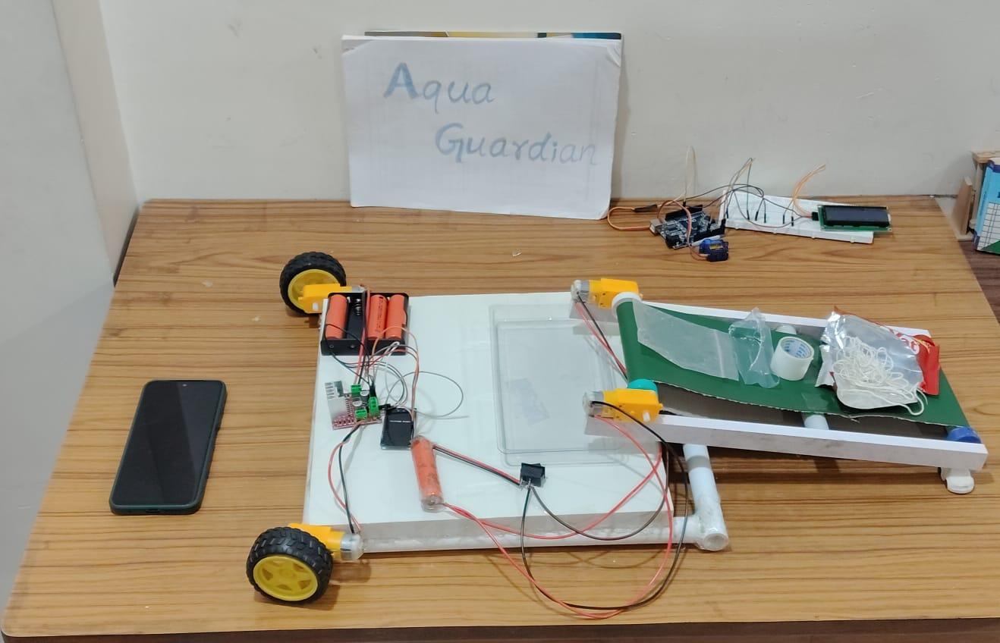
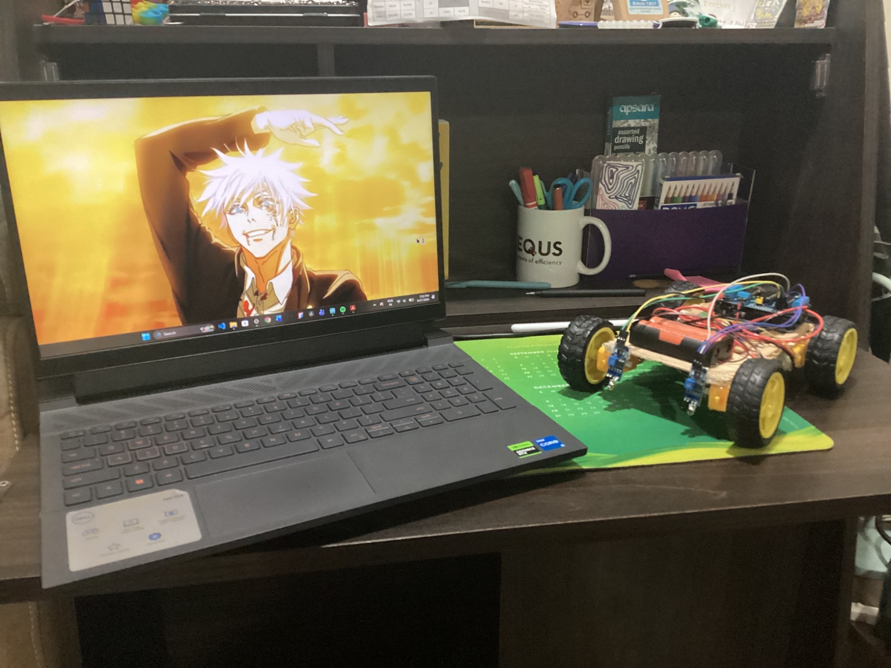

I love programming and making stuff. Its an essential part of me. Although I do not have much complete projects on Github (I am new to the platform and making stuff overall), I have built some projects that I truly appreciate.
LineTax is my very own line following robot that I built using my experience in Arduino, Motor Drivers, and DC Motors. As many of you may know it functions based on the working of IR sensors. This project eventhough being realtively easy, taught me more about programming and how to control sensors which have analog sensors in more detail.

AquaGuardian is a water purification system i designed that operates on the design of collecting plastic waste in polluted small water bodies. It is designed and equiped with an AI image detection model (contained within an ESP32CAM module) to detect and classify the waste it collects. It also has an enabled Bluetooth operated app to control the devices direction of collection of waste. The system is overall controlled by an ESP32 DEVKIT V1. This is my first project of working with AI.

I want to built many more such projects starting with a robotic arm and progressing towards other stuff that I would like such as building a custom clock that i am planning on building. I also hope to create other stuff in the future such as building my own drone with a custom flight controller. My ultimate goal is to build a Rocket Flight Controller.